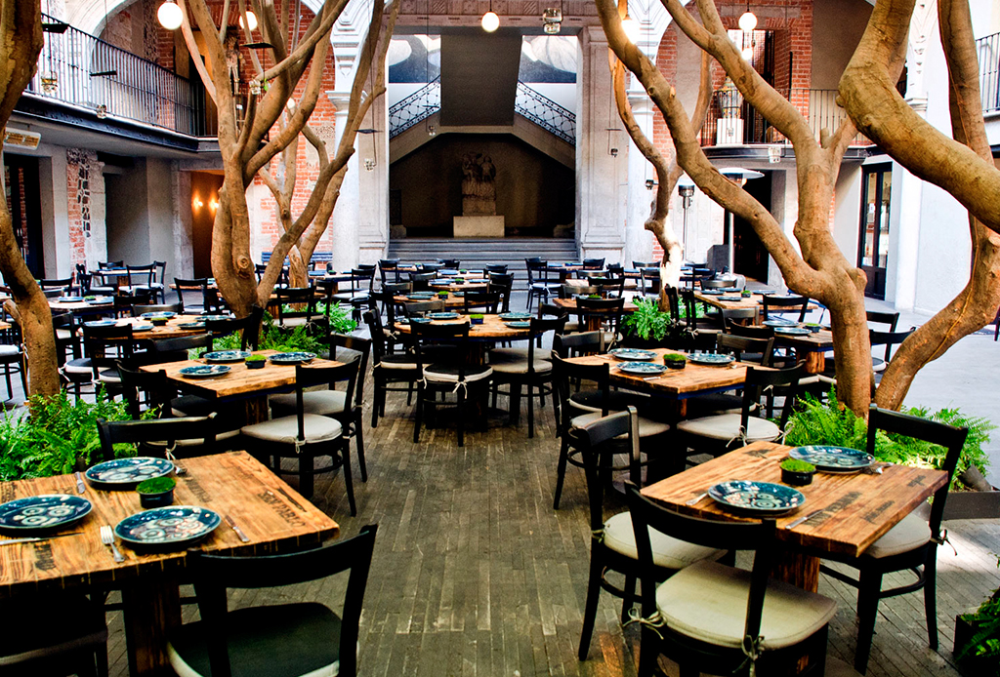

<section class="page-section clearfix">
    <div class="container">
      <div class="intro">
        
        <div class="intro-text left-0 text-center bg-faded p-5 rounded">
          <h2 class="section-heading mb-4">
            <span class="section-heading-upper">Restaurante</span>
            <span class="section-heading-lower">La Buena Vida</span>
          </h2>
          <p class="mb-3">El Restaurante La buena vida, en el corazón del Bosque de Chapultepec, inició su trayectoria en 1964.
            Desde entonces, más de 50 años han transcurrido en la vida del restaurante, formando parte en innumerables ocasiones de la vida de capitalinos y visitantes.
            Un lugar icónico El Bosque de Chapultepec, con una superficie equivalente dos veces a la de Central Park, es el entorno privilegiado para la ubicación del Restaurante El Lago.
            Se distingue por su arquitectura, diseñada por el Arquitecto Félix Candela, famoso por la creación de estructuras basadas en el uso extensivo del paraboloide hiperbólico.
          </p>
          <div class="intro-button mx-auto">
            <a class="btn btn-primary btn-xl" [routerLink]="['/menu']">Visita Nuestro Menu</a>
          </div>
        </div>
      </div>
    </div>
  </section>